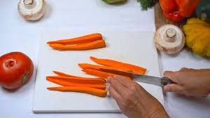
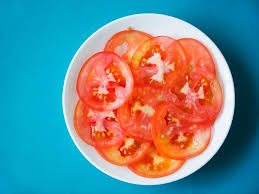
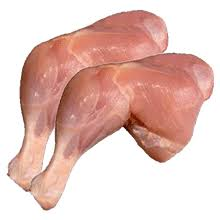
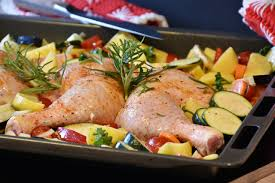
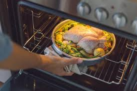
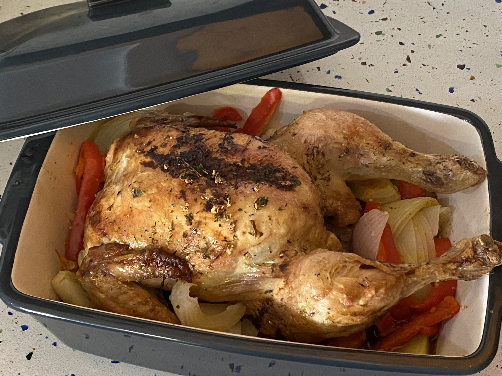

Cóm fer pollastre al forn amb arros blanc de guarnició
Tornar a la página principal 
INDEX DE CONTINGUTS
Ingredients
Pas a pas
Resultat Final
Ingredients
- 4 cuixes de pollastre
- 1 pastanaga
- 1 ceba gran
- 2 tomàquets mitjans
- 4 grans d'all
- 200ml d'aigua o brou
- 75ml de xerès, vi blanc o brandi
- sal
- oli d'oliva
- pebre
Pas a pas
- Primer pas: Precalfa el forn a 200°
- Segon pas:Pela i trosseja en rodanxes la pastanaga.

- Tercer pas:Trosseja el tomàquet i la ceba.


- Quart pas:Quita la pell a les cuixes de pollastre.

- Cinqué pas: Posa'ls en una safata per a forn i afegeix-los un doll d'oli, sal i pebre.

- Sisè pas: Reparteix les verdures trossejades en la safata amb el pollastre i aboca per damunt l'aigua o brou i el xerès.

- Setè pas:Fica la safata en el forn, baixa la temperatura a 180° i enforna durant una hora i mitja més o menys. A mitja cocció dona-li la volta perquè es dauri pels dos costats.

Resultat Final

Tornar a encapçalament principal